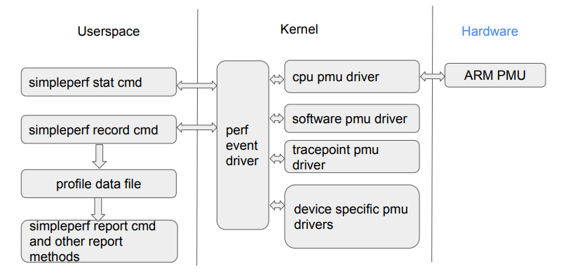
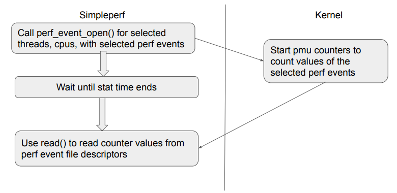
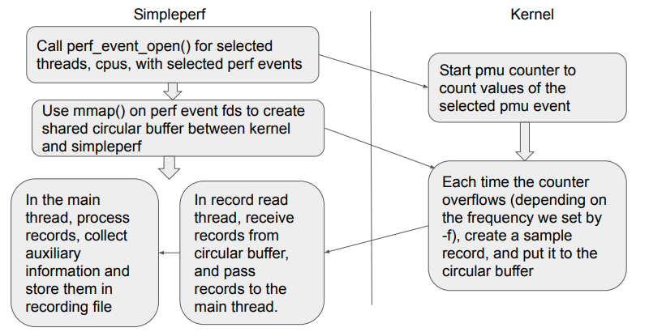

simpleperf_notes
SimplePerf Notes
这个博客是在学习使用SimplePerf来监视测试机在运行测试程序时的访存请求总数以及缓存缺失数时所记录的笔记。
SimplePerf是一种CPU分析器(Profiler)，可以用于监测测试程序运行时的性能数据，而本人需要使用测试机的实测缓存访问结果来验证缓存仿真器的仿真结果。这个博客将会记录SimplePerf的基本用法以及一些底层的原理。
在将SimplePerf的统计结果与缓存仿真器的仿真结果进行比对已验证缓存仿真器的可靠性之前，需要验证一点，或者说必须确保的是，也就是SimplePerf的结果确实是实测所得的结果，体现在下面几个方面：
- SimplePerf工具本身是没有问题的？
- SimplePerf的用法是没有问题的？
- SimplePerf的结果统计分析过程是没有问题的？也就是对SimplePerf的输出结果的解释是准确的？
这个博客所记录的问题就是为了确保上面几点是能够成立的。
PMU
SimplePerf需要PMU(Performance Monitor Unit)的支持，本人所使用的测试机处理器型号为Cortex A75，因此这里所记录的PMU相关内容是Cortex A75处理器中的PMU相关内容。
这部分的内容参考自ARM手册。
处理器中的PMU能够允许用户收集到各种运行时的内核(Core)以及内存系统相关的操作统计信息，PMU中包含六个计数器，每个计数器能够用于统计处理器中已有的任何事件相关的统计信息。由于管道效应，记录的绝对计数可能会有所不同，除了在很短的时间内启动计数器的情况外，这个问题的所带来的影响是可以忽略的。
PMU中包含下面的接口与计数器：
- Event Interface: 来自整个处理器设计中的其他单元向PMU提供的事件接口
- System register and APB interface: 可以使用系统寄存器或外部 APB 接口对 PMU 寄存器进行编程
- Counters: 32-bit 的事件寄存器，这些事件寄存器会在根据事件递增，此外还有一个64-bit 的时钟寄存器
- PMU register interface: Cortex A57支持从内部系统寄存器接口和内存映射接口访问PMU寄存器
这里介绍几个本人需要使用得到的PMU事件，完整的事件列表可以在PMU Events中找到：
-
SW_INCR: 体系架构已执行的指令，也就是条件检查已通过的指令总数
-
L1D_CACHE: L1data cache的访问总数，这个事件会对L1 data cache的读，写以及预取请求进行计数，这包括尚未具有可缓存性属性的不可缓存推测性读取
-
L1D_CACHE_REFILL: L1 data cache重填充次数，这个事件会记录所有对L1 数据缓存的缓存分配，这包括读取行填充(linefill)，存储(store)行填充，以及预取行填充
重填充(refill)计数器：会将所有导致重填充的内存读取或者写入操作进行计数，这些请求会导致L1数据缓存从下面的位置重新填充：另一块L1数据缓存、L2缓存以及任何其他级别的缓存或者主存，换句话说，也就是L1数据访问所导致的缺失。
-
L1D_CACHE_REFILL_INNER: 计数器对造成L1D_CACHE_REFILL的每个访问进行计数，这些访问导致缓存通过直接集群内部的另一个缓存传输来实现重填充
-
L1D_CACHE_REFILL_OUTER: 计数器对造成L1D_CACHE_REFILL的每个访问进行计数，这些访问导致缓存通过直接集群外部的另一个缓存传输来实现重填充
需要注意的是，这里的内部和外部之间的边界是由具体实现所定义的，不一定和其他类似的边界有关联，比如inner cacheable和outer cacheable的边界。
Cache controller
在ARM Cortex-A系列的处理器中，包含一个缓存控制器(Cache Controller)的硬件模块，这个硬件模块对于应用程序是不可见的。缓存控制器会自动将代码或者数据从主存写入到缓存中。缓存控制器会接受来自处理器内核的内存读写请求然后对缓存或者外部内存执行必要的操作。
在缓存控制器执行操作之前，需要先确认访存请求的地址是否是可缓存的(Cacheable)，只有当访存请求的地址被标记为可缓存的，缓存控制器才会执行缓存查找(Cache lookup)的操作。
缓存查找就是检查是否能够在缓存中找到这个请求的地址，缓存查找的具体方法是通过比对请求地址中的某一部分比特与缓存中行相关联的tag值，如果能够匹配，并且缓存行被标记为有效的，则缓存命中，那么读写请求都在缓存中进行。
如果在缓存中没有找到与请求地址相匹配的tag，或者对应的缓存行是无效的，则缓存缺失，缓存缺失会导致这个请求进一步传递到存储层次结构中的下一级，比如L2缓存或者外部内存。缓存缺失也会导致一个缓存行填充(cache linefill)，缓存行填充会导致将一块主内存的内容复制到缓存中。同时，请求的数据或指令被流式传输到内核(streamed to the core)。同样的，缓存行填充的过程对于应用程序是透明的。
需要注意的是，在缓存行填充的过程中，处理器内核并不需要等到数据被写入到缓存后，也就是缓存行填充执行完成后，才能使用数据。缓存控制器通常会首先访问缓存行内的关键字(critical word)。比如现在要加载一条指令，而这个读指令的请求导致了缓存缺失，并从而导致缓存行填充，处理器内核会首先会检查缓存行中包含请求数据的那部分，然后关键字会被直接供应到处理器内核流水线，而缓存硬件和外部总线接口随后在后台读取缓存行的其余部分。
SimplePerf
SimplePerf是安卓对于Linux中的Perf工具的替代品，这个工具需要linux内核支持和PMU的硬件支持。
SimplePerf的整体框架如下图所示：4

前面已经讨论过了SimplePerf的PMU硬件支持，所以这里将会对SimplePerf的内核支持进行介绍。
在操作系统内核中使用Perf事件驱动(perf event driver)来桥接用户空间与PMU驱动器(pmu drivers)。Perf事件驱动的主要功能是将PMU事件映射到Perf事件类型，然后向用户空间提供一个接口以罗列当前可支持的Perf事件，以及监视已选线程性能的系统调用(“perf_event_open()”)。
PMU驱动器需要在Perf事件驱动器中进行注册，包含下面几种PMU驱动器：
- CPU PMU驱动器：该驱动器用于操作PMU硬件设备，位于/drivers/perf目录下
- 软件PMU驱动器：用以统计CPU时钟，内存页错误之类的事件
- tracepoint PMU驱动器：用以统计类似sched:sched_switch之类的事件
- 设备特定的PMU驱动器
对于用户空间，SimplePerf将其功能划分为子命令(Subcommands)：
- list command: 用以列举设备上可用的Perf事件
- stat command: 监视线程，然后打印事件计数器的值
- record command: 监视线程，然后使用采样生成分析数据(profile data)文件，这个文件命名为perf.data，无法直接查看文件的内容
- report command: 报告由record命令生成的分析数据文件
SimplePerf中的stat命令执行原理如下如所示：

从上图可以看到，SimplePerf会根据stat命令的参数调用perf_event_open()系统调用来监视执行的线程以及perf事件，随后内核将会启动相应事件的计数器，等到统计的时间结束后，SimplePerf可以读取相应perf事件文件描述符(perf event file descriptors)的计数器的值。
SimplePerf中另一个比较常用的命令是record，record命令能够提供更加详细的分析数据，所以这个命令相较于stat命令也更加复杂，下图是record命令的执行原理：

同样的，SimplePerf首先会根据record命令的参数调用perf_event_open()系统调用来监视执行的线程以及perf事件，随后内核将启动相应的事件计数器，与stat不同的是，此时SimplePerf中会调用mmap()函数来创建一个与内核共享的循环缓冲区，从而避免因为计数寄存器溢出而导致的数据丢失。当事件计数器产生溢出后，创建一个采样record，然后将其放入到循环缓冲区中。最后，SimplePerf中使用多线程的方式来读取结果：使用read record线程从循环缓冲区中读取采样record，然后将读取到的结果传递给主线程，而在主线程中手机辅助信息，并将最终的结果写入到分析数据文件中。
record命令可以使用的选项，这里只记录了一些常用的选项：
-
‘-p pid1,pid2,…’：记录已存在的进程的perf事件
-
‘-t tid1,tid2,…’：记录已存在的线程的perf事件
-
-a：记录全系统的perf事件
-
–cpu cpu_item1,cpu_item2,…：只记录已选择的CPU上的相关信息，这个选项的参数是十进制，从0开始编号。
这里需要注意与taskset的差别，taskset锁核命令所接受的参数是16进制，参数的每一位代表一个核。
-
-e event1[:modifier1],event2[:modifier2],…：选择需要统计的perf事件，modifier有两种可选项：
- u - 只监视用户空间的事件
- k - 只监视内核空间的事件
在使用事件修饰符时，需要注意的一点是，对于同一个事件，如果只统计该事件用户空间的计数器，那么report的结果中会将内核部分的占比标记为unknown；如果同时统计该事件用户空间和内核空间的计数器，那么report的结果中会将内核部分的占比标记出来，通常内核部分的占比所属的shared object字段使用方括号进行标记。
执行完record命令后，SimplePerf将会生成分析数据文件，这个文件无法直接读取，需要使用report命令来解析这个文件中的统计数据。
如果想要了解每个子命令可接受的选项的话，可以使用 ‘simpleperf help (subcommands)’ 来查看该子命令所有可接受的选项。